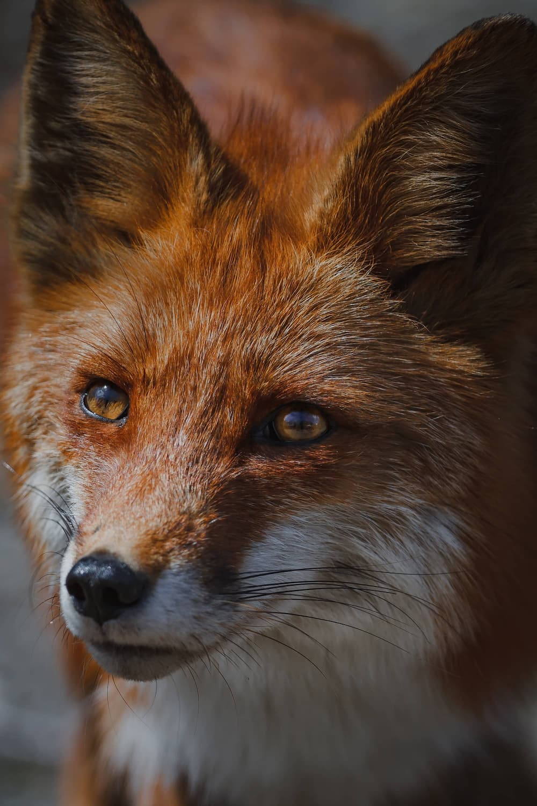
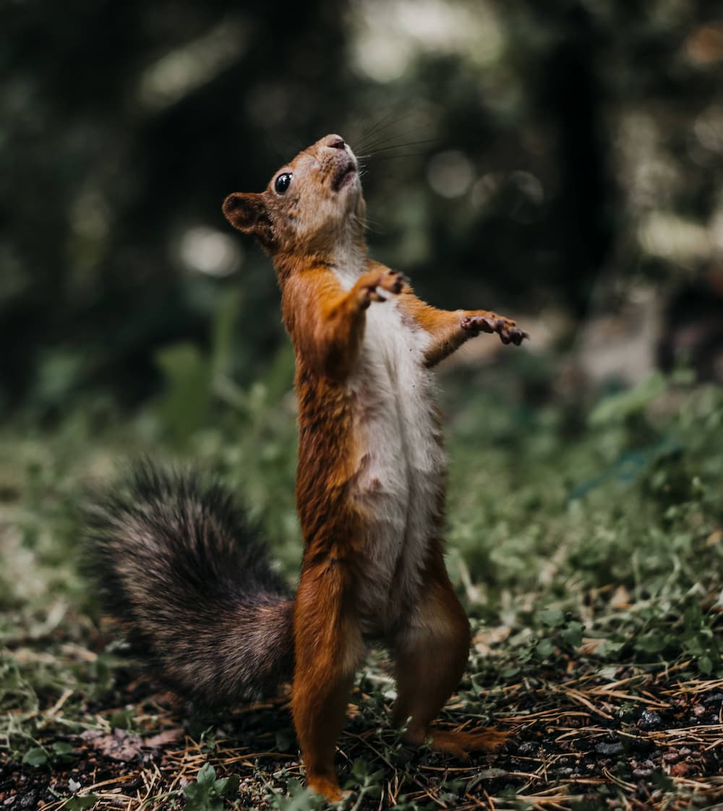
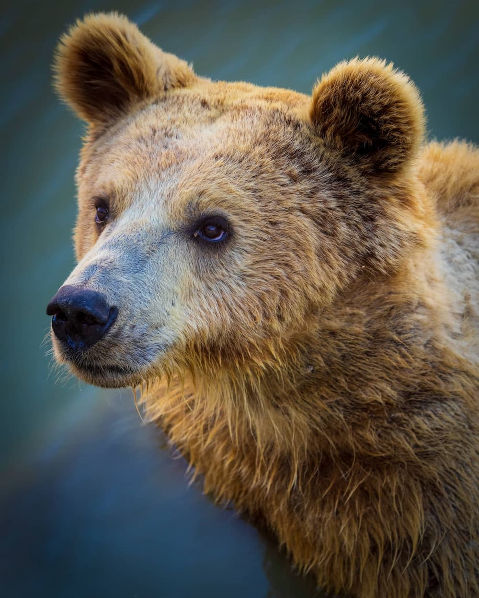
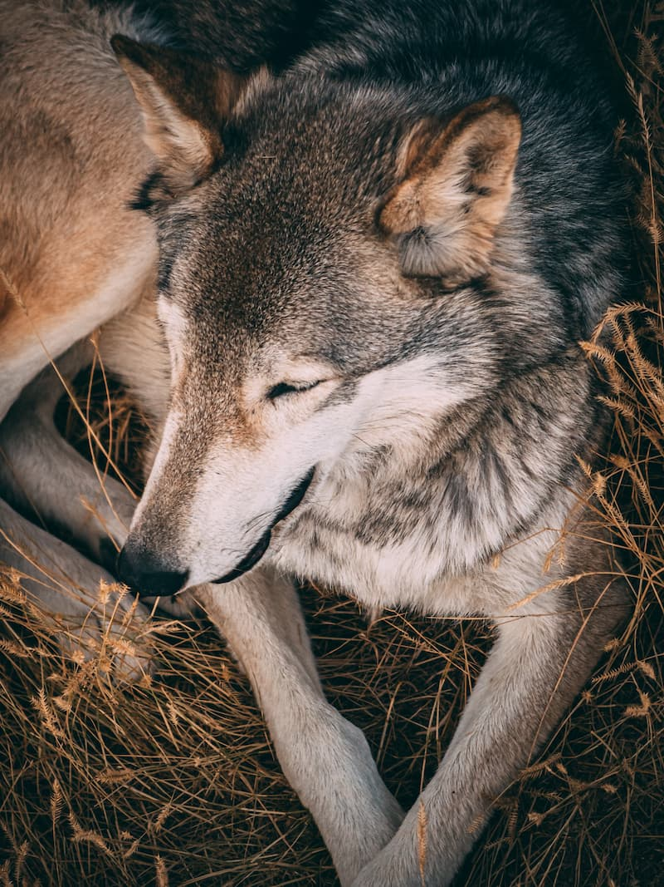
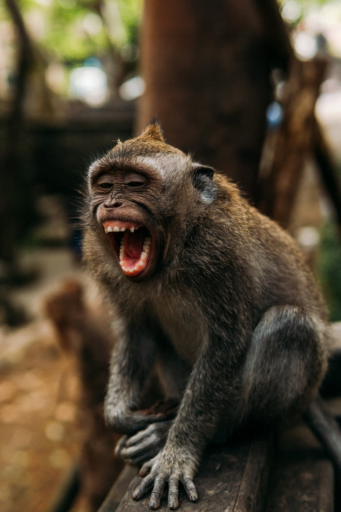
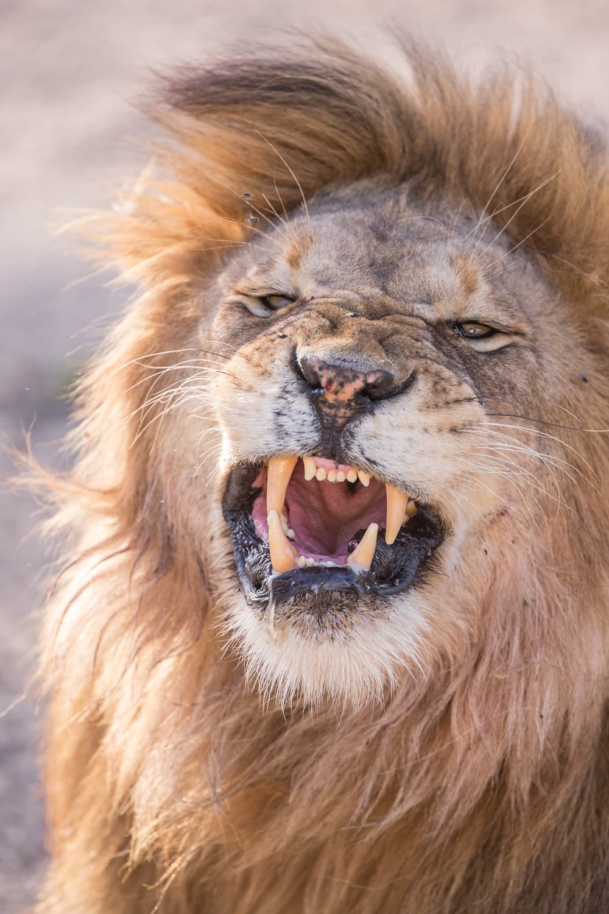
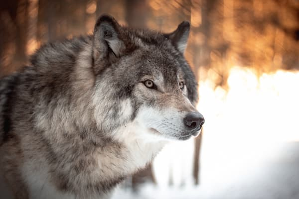
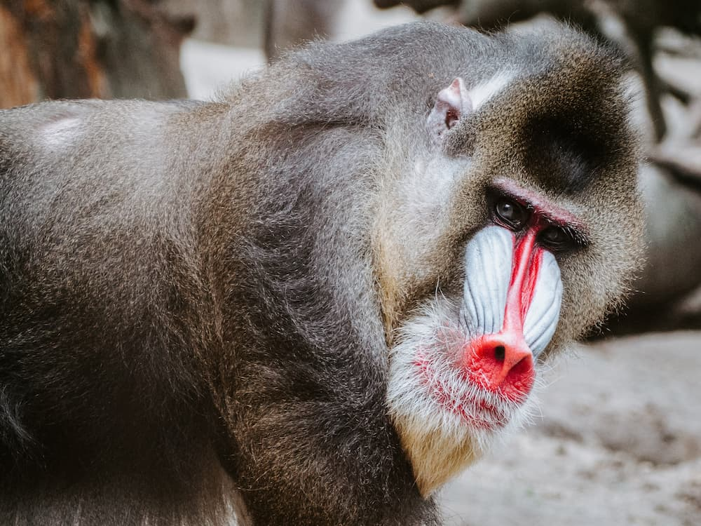
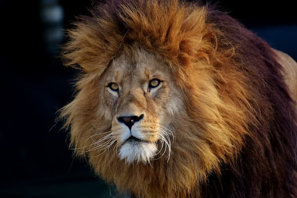
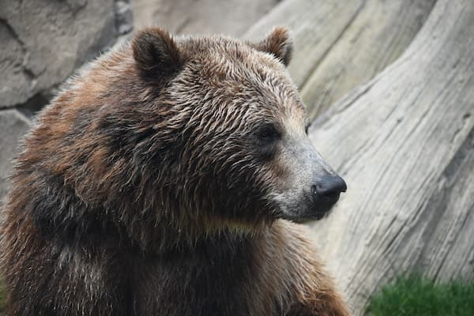

Belezas
Selvagens
- 
- 
- 
- 
- 
- 
RAPOSA
As raposas são animais fascinantes e belos, com características únicas que as tornam muito especiais. Com seu focinho comprido, suas orelhas pontudas e sua pelagem exuberante, elas encantam quem as observa.
Além de sua aparência impressionante, as raposas são animais muito inteligentes e astutos, capazes de se adaptar a diferentes ambientes e situações. Elas têm habilidades de caça excepcionais, sendo capazes de capturar presas de diferentes tamanhos e tipos.
ESQUILO
Os esquilos são roedores ágeis que vivem em árvores e se alimentam principalmente de sementes, frutas e insetos. Eles são capazes de armazenar grandes quantidades de comida em suas bochechas expansíveis e têm vocalizações características.
Infelizmente, os esquilos enfrentam ameaças em ambientes urbanos, incluindo a perda de habitat natural e predadores como gatos e corujas. A proteção desses animais é fundamental para sua sobrevivência.
URSO
Os ursos são animais mamíferos encontrados em todo o mundo, com oito espécies diferentes existentes atualmente. Eles são conhecidos por sua grande estatura, força física e pelagem espessa que os protege em climas frios.
Esses animais são principalmente onívoros, se alimentando de plantas, frutas, nozes e carne. Eles são excelentes pescadores e podem capturar grandes peixes com suas garras afiadas.
Os ursos são animais solitários, mas muitas vezes se reúnem em áreas ricas em alimento, como rios com salmão. Eles são capazes de comunicar-se com outros ursos através de uma série de vocalizações e cheiros.
LOBO
Os lobos são animais fascinantes e majestosos, pertencentes à família Canidae, assim como as raposas. Com seu tamanho e força impressionantes, eles são conhecidos por sua habilidade de caça em grupo e por serem uma espécie de animal social, vivendo em grupos chamados de matilhas.
Os lobos são animais carnívoros, se alimentando principalmente de presas como veados, alces e carneiros. Eles possuem sentidos muito aguçados, especialmente o olfato, que os ajuda a detectar presas e outros lobos a grandes distâncias.
MACACO
Os macacos são animais muito inteligentes e sociáveis, pertencentes à família dos primatas. Eles são encontrados em todo o mundo, desde florestas tropicais até ambientes urbanos. Com sua habilidade de locomoção e destreza manual, eles são conhecidos por sua agilidade e capacidade de manipular objetos com precisão.
Os macacos são principalmente herbívoros, se alimentando de frutas, folhas e sementes. Alguns tipos de macacos também podem se alimentar de insetos e pequenos animais.
LEÃO
O leão é um dos grandes felinos mais icônicos do mundo, pertencente à família Felidae. Eles são conhecidos por sua força física e majestade, sendo muitas vezes considerados o rei da selva. Encontrados principalmente na África, os leões são animais sociáveis que vivem em grupos chamados de coalizões ou alcateias.
Os leões são animais carnívoros, se alimentando principalmente de presas como zebras, gnus e búfalos. Eles são caçadores poderosos, trabalhando em equipe para emboscar suas presas e realizando ataques em alta velocidade.
FAQ
- Quais são as principais características dos macacos?
- Os macacos são primatas com braços e pernas compridos, caudas (em algumas espécies), mãos com polegares oponíveis e cérebros altamente desenvolvidos. Eles são animais inteligentes e sociáveis, e possuem uma variedade de habilidades, como a capacidade de usar ferramentas e se comunicar por meio de vocalizações e gestos.
- Como os esquilos se preparam para o inverno?
- Os esquilos costumam armazenar alimentos durante o outono, para que tenham suprimentos suficientes para sobreviver durante o inverno. Eles geralmente escondem nozes e sementes em locais seguros, como tocas ou buracos em árvores.
- Como os ursos hibernam e por quanto tempo?
- Durante a hibernação, os ursos diminuem sua atividade metabólica e respiratória, e reduzem sua frequência cardíaca e temperatura corporal. Eles podem ficar hibernando por vários meses, dependendo da espécie e das condições ambientais.
- Como os lobos escolhem seus líderes?
- Os lobos vivem em grupos hierárquicos liderados por um casal reprodutor dominante, conhecido como alfa e beta. Eles são geralmente os lobos mais velhos e experientes do grupo, que ganharam respeito e confiança dos demais membros.
Números
Raposas
3634Esquilos
5256Urso
320Leão
947- 
- 
- 
- 
Contato

- jacksonmrpro@gmail.com
- +55 (21) 9999-9999
- Rua do Natal, nº 12
- Paraná - PR
- Doe 0.0068 bitcoin para nos ajudar
- Seg à Sex das 8 às 18